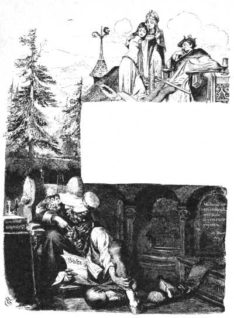

むかし、あるところに、ひとりのまずしい女がおりました。この女があるときひとりの男の子を生みましたが、その子は頭に〈
（１）福の
皮〉をかぶって生まれてきました。それで、この子は十四になったら、王さまのお
姫さまをおよめさんにもらうだろう、という
予言をしたものがありました。
それからまもなくのこと、王さまがこの村にやってきました。けれども、それが王さまだとは、だれひとり
夢にも知りませんでした。王さまは、なにかかわったことはないかと、村の人たちにたずねました。すると、みんなはこたえて、こういいました。
「さいきん、
福の
皮をかぶった子どもが生まれました。こういう子どもは、なにをやってもいい
運にめぐまれているものです。じっさい、その子についても、十四になったら、王さまのお
姫さまをおよめさんにもらうだろう、という
予言をしたものもあるんですよ。」
王さまはその予言のことをきいて、ひどく
腹をたてました。しかし、もともと
腹黒い人でしたから、その子のおとうさんとおかあさんのところへいって、いかにもしんせつそうなふりをして、こういいました。
「どうだろう、あんたがたはまずしいようだが、その子どもをわたしにくれないかね。わたしがめんどうをみてやるよ。」
はじめのうちは、おとうさんもおかあさんもことわりました。けれども、その見知らぬ人が子どもをもらうかわりにといって、たくさんのお
金をさしだしたものですから、ふたりは、
（これは
福の子だ。どっちみち、いい
運にめぐりあうにちがいない。）
と、考えて、とうとう
承知してしまいました。そして、子どもを王さまにわたしたのです。
王さまはその子を
箱のなかにいれました。そして、それをもって馬をすすめていきますと、そのうちに、とあるふかい川にでました。すると、王さまはその箱を川のなかにほうりこんでしまいました。そして、
（これで、思いもよらないやつに
姫をやらなくてもすんだわけだ。）
と、心のなかで思いました。
ところが、その
箱はしずまないで、
小舟のように、ぷかぷかうかんでいきました。そして、なかには水一てきはいりませんでした。
こうして、箱は王さまの
都から二マイルほどはなれている
水車小屋のところまでながれていって、そこの
堰にひっかかって、とまりました。
運よく、そこに立っていた
粉ひきの
小僧がそれを見つけて、
とび口でもってひきよせました。
小僧は、すばらしい
宝ものを見つけたと思いました。ところが、
箱をあけてみますと、どうでしょう、なかには、きれいな男の子がはいっているではありませんか。男の子は、みるからに元気よく、ぴちぴちしていました。
小僧はこの子を
粉ひきの
夫婦のところへつれていきました。すると、粉ひきの夫婦には子どもがなかったものですから、ふたりは、
「この子は、
神さまからさずかったのだ。」
と、いいました。
夫婦はこの子をだいじにそだてました。やがて、子どもは大きくなって、りっぱな
若者になりました。
あるひどい
嵐のとき、王さまがこの
水車小屋にたちよったことがありました。王さまは粉ひきの夫婦にむかって、この大きな子どもはおまえたちの子どもか、とたずねました。
「いいえ、これはすて子でございます。」
と、夫婦はこたえていいました。
「じつは、いまから十四年ほどまえに、
箱にいれられて、
堰にながれつきましたのを、
粉ひきの
小僧が水からひきあげたのでございます。」
それをきいて、王さまは、これこそ、むかしじぶんが川になげこんだ
福の子にちがいない、と気がつきました。そこで、
「これ、おまえたち、この子どもに
妃のところへ
手紙をとどけさせてはくれまいか。ほうびには
金貨を二
枚つかわすが。」
と、いいました。
「かしこまりました。」
夫婦のものはこうこたえて、子どもにしたくをするようにいいつけました。
王さまはお妃さまに手紙を書きました。ところがその手紙には、
「この手紙をもった子どもが城へついたら、ただちに殺して、うめてしまえ。それも、わしがもどらぬうちに、すっかりかたづけてしまえ。」
と、書いてあったのです。
男の子はこの手紙をもってでかけましたが、とちゅうで道にまよってしまって、日がくれてから、とある大きな森のなかにはいりこみました。
まっくらやみのなかに、ポツンと小さなあかりが見えました。そこで、男の子はそれをめあてに歩いていきますと、小さな家のまえにでました。
家のなかへはいってみますと、おばあさんがたったひとり
炉ばたにすわっていました。おばあさんは男の子のすがたを見ますと、びっくりして、いいました。
「おまえはどこからきたのだい。で、これからどこへいくんだね。」
「ぼくは
水車小屋からきたんです。」
と、男の子はこたえました。
「お
妃さまのところへ
手紙をとどけにいくとこなんです。だけど、森のなかで道にまよっちゃったから、今夜はここにとめてもらいたいんです。」
「かわいそうに。」
と、おばあさんはいいました。
「おまえは、どろぼうのうちにまよいこんだんだよ。いまにみんながかえってくれば、おまえは
殺されちまうよ。」
「どんなやつがきたって、ぼくはこわかあありません。ぼくはもうくたびれちゃって、これいじょう、ひと足も歩けないんです。」
男の子はこういうと、こしかけの上に手足をのばして、そのまま、ぐうぐうねこんでしまいました。
それからまもなく、どろぼうたちがかえってきました。どろぼうたちはぷんぷん
腹をたてて、そこにねている
小僧は、いったいどこのどいつだ、とたずねました。
「ああ、そりゃあ、
罪のない子どもだよ。」
と、おばあさんがいいました。
「森んなかで道にまよってたから、かわいそうになって、わたしがとめてやったんだよ。お
妃さまのとこへ手紙をもっていくんだとさ。」
さっそく、どろぼうたちは
手紙の
封を切って、読んでみました。すると、この子がお
城へつきしだい、ただちに
命をとってしまえ、と書いてあるではありませんか。なさけ知らずのどろぼうたちも、これを見ると、さすがにかわいそうになりました。
そこで、どろぼうのかしらはその手紙をやぶいて、べつに手紙を書きました。それには、この子どもがお城へつきしだい、ただちにお
姫さまと
結婚させるように、と書いておきました。
どろぼうたちは、あくる朝まで、男の子をこしかけの上にしずかにねかせておいてやりました。そしてつぎの朝になって、男の子が目をさましたとき、みんなは男の子に手紙をわたして、お
城へいく道をおしえてやりました。
お
妃さまはこの手紙をうけとって、それを読みますと、なかに書いてあるとおり、すぐにりっぱな
婚礼のしたくをいいつけました。こうして、お
姫さまは
福の子のおよめさんになったのです。福の子は心のやさしい、美しい
若者でしたから、お姫さまは心から
満足して、ふたりでたのしくくらしていました。
しばらくたって、王さまがお
城へかえってきました。王さまは、
予言のとおりに、福の子がお姫さまをおよめさんにしているのを見ますと、
「これはどうしたことだ。わしは手紙に、まるでちがった
命令を書いておいたはずだが。」
と、いいました。
すると、お妃さまはその手紙を王さまにわたして、
「ごじぶんで、なかに書いてあることをお読みになってごらんなさいませ。」
と、いいました。
王さまはその
手紙を読んで、はじめて、それがじぶんの書いたのとすりかえられたものであることに気がつきました。そこで、王さまは
福の子に、じぶんのたのんだ手紙はどうなったのか、どうしてまた、かわりにべつの手紙をもってきたのか、と、たずねました。
「わたしはなんにも知りません。」
と、
福の子はこたえていいました。
「わたしが森のなかでねた
晩に、きっとすりかえられたにちがいありません。」
王さまはかんかんにおこって、いいました。
「そうやすやすと、おまえにうまくやられてたまるものか。わしのむすめがほしいものは、
地獄から
鬼の頭の
金の
髪の
毛を三本とってこなければならんのだ。わしののぞみのものをもってくれば、むすめはそのままおまえの
妻にしておいてよろしい。」
王さまとしては、これでこの
若僧を
追いはらうことができると思ったのです。
ところが、
福の子はこたえました。
「おのぞみの
金の
髪の
毛は、かならずとってまいります。
鬼なんか、すこしもこわくはありません。」
こうして、福の子はわかれをつげて、
旅にでかけました。
福の子がずんずん歩いていきますと、やがて、とある大きな町にきました。町の門のところで、
番人が、おまえはどんな
職をこころえているか、どんなことを知っているか、と福の子にたずねました。すると、福の子は、
「なんでも知ってるよ。」
と、こたえました。
「そいつはありがたいな。」
と、番人はいいました。
「じつは、この町の
井戸から、いままでは
酒がわきでていたんだが、そいつがいまではすっかりかれちまって、水さえもでないしまつなんだ。どうしたわけだか、おしえてもらえないかね。」
「おしえてあげるよ。だが、わたしがかえってくるまで、
待っていたまえよ。」
と、福の子はいいました。
こういって、福の子はずんずん歩いていきました。やがて、またべつの町の門のまえにきました。ここでもまた、
門番が、おまえはどんな
職をこころえているか、どんなことを知っているか、と、たずねました。
「なんでも知ってるよ。」
と、福の子はこたえました。
「そいつはありがたいぞ。じつは、この町に一本の木があるんだが、いままではその木に
金のリンゴがなっていたのに、いまじゃ葉っぱ一
枚でないありさまなんだ。どういうわけだか、ひとつおしえてもらいたいね。」
「おしえてあげるよ。だが、わたしがかえってくるまで
待っていたまえ。」
福の子はこういって、またさきへいきました。そのうちに、とある大きな川のところにでましたが、この川はどうしてもわたらなければなりません。ここでも
渡し
守が、おまえはどういう
職をこころえているか、なにを知っているか、と、福の子にたずねました。
「なんでも知ってるよ。」
と、福の子はこたえました。
「そいつはうれしいな。」
と、
渡し
守がいいました。
「おれは、年がら年じゅういったりきたりして、人をわたしてばかりいるんだが、どうしてかわりがこないのか、そのわけをおしえてもらいたい。」
「おしえてあげるよ。だが、わたしがかえってくるまで
待っていたまえ。」
と、福の子はいいました。
この川をわたりますと、いよいよ
地獄の入り口が見つかりました。地獄のなかはまっ黒で、すすけていました。
鬼はちょうどるすでしたが、鬼のおかあさんが大きな
安楽いすにこしかけていました。
「なんの用だい。」
と、
鬼のおかあさんは
福の子にたずねました。けれども、このひとは、そんなに
たちがわるいようには見えませんでした。
「ぼくは、鬼の頭の
金の
髪の
毛が三本ほしいんです。でないと、およめさんをぼくのものにしておけないんですもの。」
と、福の子はこたえました。
「そりゃあまた、たいへんなのぞみだね。」
と、
鬼のおかあさんがいいました。
「鬼がかえってきて、おまえを見つけようもんなら、おまえは、たちまちやっつけられちまうよ。だが、おまえがかわいそうだから、なんとかおまえをたすけてやるようにするよ。」
鬼のおかあさんはこういって、福の子をアリのすがたにかえてしまいました。そして、
「わたしのスカートのひだのなかにはいこんでいな。そうしていりゃ、だいじょうぶだよ。」
と、いいました。
ええ、と、福の子はこたえていいました。
「それでけっこうなんですが、まだ三つほど知りたいことがあるんです。いままでお
酒のわきでていた
井戸が、すっかりかれてしまって、水一てきでないというのは、どうしてなんですか。いままで
金のリンゴがなっていたのに、いまでは葉っぱ一
枚でないというのは、どうしてなんですか。それから、
渡し
守が年がら年じゅういったりきたりして、ひとをわたしているのに、かわりの人がさっぱりこないというのは、どうしてなんですか。」
「そいつはむずかしい
問題だね。」
と、
鬼のおかあさんがいいました。
「だがまあ、うごかずにじっとしておいで。そして、わたしが鬼の頭から
金の
髪の
毛を三本ひきぬくときに、鬼がなんていうか、よく気をつけてきいているんだよ。」
日がくれてから、鬼がかえってきました。鬼はうちのなかへはいるかはいらないうちに、なかの空気がすんでないことに気がつきました。
「くさいぞ、くさいぞ、人間の
肉くさいぞ。なんだかへんだぞ。」
と、
鬼がいいました。
それから、鬼はへやのすみからすみまでのぞいてさがしまわりましたが、なんにも見つかりませんでした。それを見て、鬼のおかあさんが鬼をしかりつけて、いいました。
「たったいま、そうじしたばっかりだよ。せっかくひとが、すっかりかたづけておいたのに、またおまえがごちゃごちゃにしてしまう。おまえの
鼻にゃ、しょっちゅう人間の肉のにおいがくっついているんだよ。さあ、すわって
夕はんでも食べな。」
鬼はごはんを食べたりお
酒をのんだりしてしまいますと、つかれがでてきて、頭をおかあさんのひざの上にのせました。そして、シラミをすこしとってくれ、といいました。

しばらくすると、
鬼はうとうとしてきて、やがて、ぐうぐういびきをかきはじめました。そのようすを見て、鬼のおかあさんは
金の
髪の
毛を一本つかんで、ぐいとひきぬいて、じぶんのそばにおきました。
「おう、いてえ。なにをするんだい。」
と、
鬼がさけびました。
「いまね、いやな
夢を見たんだよ。」
と、鬼のおかあさんがこたえました。
「それで、思わずおまえの
髪の
毛をつかんだのさ。」
「いったい、どんな夢を見たんだい。」
と、鬼がたずねました。
「ある町の
市場の
井戸の夢だったよ。いままでは
酒がわきでていたのに、それがかれちまって、水さえもでなくなっちまったんだよ。どうしたわけなんだろうね。」
「へへん、あいつらにわかってたまるもんか。」
と、
鬼はこたえました。
「その井戸のなかの石の下に、ヒキガエルが一ぴきいるのさ。そいつを
殺しさえすりゃあ、また酒がわいてくるんだ。」
鬼のおかあさんは、また鬼の頭のシラミをとりはじめました。そのうちに、鬼はまたもやねむりこんで、
窓もふるえるような、ものすごい
いびきをかきはじめました。そこで、
鬼のおかあさんは、鬼の頭から二本めの
髪の
毛をひきぬきました。
「うわあ。なにをするんだい。」
鬼はかんかんにおこって、どなりました。
「わるく思わないでおくれ。
夢を見てやったことなんだから。」
と、鬼のおかあさんはこたえました。
「こんどは、どんな夢を見たんだ。」
と、鬼がたずねました。
「ある王さまの国にはえている、くだものの木の
夢なんだがね、その木にはいままでずうっと
金のリンゴがなっていたのさ。それが、いまじゃ葉っぱ一
枚でやしないんだよ。どうしたわけなんだろうね。」
「へへん、あいつらにわかってたまるもんかい。」
と、鬼はこたえていいました。
「その木の
根っこをネズミがかじっているからさ。そのネズミを
殺しちまや、また金のリンゴがなるようになる。だけど、このままネズミがかじっているようだと、いまにその木はすっかりかれちまわあ。ところでおっかさん、もう
夢を見るのはやめにして、おれをねかしてくれよ。こんど、おれのねているじゃまをしたら、横っつらをぶんなぐるぜ。」
鬼のおかあさんはうまく鬼をなだめて、またシラミをとりはじめました。そのうちに、鬼はまたもやねむりこんで、ぐうぐうものすごいいびきをかきはじめました。
そこで、鬼のおかあさんは、鬼の頭から三本めの
金の
髪の
毛をつかんで、ひきぬきました。
鬼はびっくりしてとびあがり、わめきながら、おかあさんにらんぼうしようとしました。けれども、おかあさんはもういちど鬼をなだめて、いいました。
「こんないやな
夢を見たんだもの、しかたがないじゃないか。」
「いったい、どんな夢を見たんだい。」
と、
鬼はたずねました。やっぱり、鬼もききたかったのです。
「
渡し
守の夢なんだがね、その渡し守は、かわりがこないものだから、年がら年じゅういったりきたりして、ひとをわたさなければならないって、ぶつぶつもんくをいってるのさ。どういうわけなんだろうねえ。」
「へーん、ばかな
野郎だなあ。」
と、
鬼はいいました。
「だれかがやってきて、むこうへわたしてくれといったら、そいつの手に
さおをにぎらせちまやいいんだ。そうすりゃ、こんどはそいつがひとをわたさなけりゃならなくなって、じぶんは
自由になれるんだ。」
こうして、鬼のおかあさんは
金の
髪の
毛も三本ぬいてしまいましたし、それに三つの
問題のこたえも話させてしまいましたので、こんどは、このばけものをそのままそっとねかせておいてやりました。それで、
鬼は
夜のあけるまで、ぐっすりねこみました。
鬼がふたたびでかけてしまいますと、鬼のおかあさんはスカートのひだからアリをとりだして、この
福の子をもとの人間のすがたにもどしてやりました。
「そら、この三本の
金の
髪の
毛をやるよ。」
と、鬼のおかあさんがいいました。
「それから、おまえの三つの
問題にたいして、鬼がなんていったか、よくきいていたろうね。」
「ええ、きいてましたよ。よくおぼえておきます。」
と、福の子はこたえました。
「これで、おまえをたすけてやったわけだから、ぼつぼつでかけたらどうだい。」
と、鬼のおかあさんがいいました。
福の子は鬼のおかあさんに、こまっているところをたすけてもらったお
礼をくりかえしいって、
地獄をたちさりました。そして、なにもかもが、じつにうまくいきましたので、福の子は大よろこびでした。
渡し
守のところまできますと、渡し守は
約束のへんじをきかしてくれ、といいました。
「まずわたしを、むこうへわたしてくれ。」
と、福の子はいいました。
「そうすれば、どうしたらおまえが
自由になれるかをおしえてやるよ。」
むこう岸へつきますと、
福の子は
鬼のいったことをそのままおしえてやりました。
「こんどだれかがやってきて、むこうへわたしてくれといったら、その男の手にさおをにぎらせてしまや、それでいいんだよ。」
福の子はずんずん歩いていきました。やがて、
実のならなくなった木のはえている町へきますと、ここでも
番人が、福の子のへんじを
待っていました。そこで福の子は、
鬼からきいたとおりのことを話してやりました。
「その木の
根っこをかじっているネズミを
殺しなさい。そうすれば、また
金のリンゴがなるよ。」
これをききますと、番人は福の子にありがとうございます、といって、お
礼のしるしに、
金貨を山とつんだ二ひきのロバをくれました。ロバは福の子のあとからついてきました。
いちばんおしまいに、
井戸のかれてしまった町にきました。ここでも福の子は、
番人に、
「この井戸の中の石の下に、ヒキガエルが一ぴきいるんだよ。そいつをさがしだして、
殺しなさい。そうすれば、またまえのようにお
酒がいくらでもわきでてくるよ。」
と、鬼がいったとおりに話してきかせました。
番人はお
礼をいって、こんどもまた、
金貨をつんだ二ひきのロバをくれました。
こうして、
福の子はようやく、およめさんの
待っている家にかえりつきました。およめさんは、福の子にもういちどあえたばかりか、なにもかもがうまくいったことをきいて、心からよろこびました。
福の子は、王さまのおのぞみの、
鬼の
金の
髪の
毛を三本もって、王さまのまえにでました。王さまは
金貨を
背中につんだ四ひきのロバを見て、すっかり
満足して、いいました。
「さて、これで
条件はすっかりととのったわけだ。わしのむすめは、おまえの
妻にしてよろしい。だがな、むこどの、このたくさんの金貨はどこで手にいれたのかね。じつにすばらしい
宝ものだが。」
「わたしはある川をわたりました。この金貨は、そこからとってまいりましたのです。その川の岸には、
砂のかわりに、こういうものがいっぱいございます。」
と、
福の子はこたえました。
「わしにもとってこられるかな。」
王さまはほしくてたまらなくなって、こうたずねました。
「いくらでも、おのぞみなだけ。」
と、福の子はこたえました。
「その川には
渡し
守がおりますから、そのものに川をわたしておもらいなさいませ。川むこうへまいりますと、いくつふくろがありましても、すぐいっぱいになってしまいます。」
欲のふかい王さまは、おおいそぎででかけました。
あの川のところまできますと、王さまは渡し守を手でまねきよせて、むこう岸へわたしてくれ、といいました。
渡し
守がやってきて、王さまにおのりなさい、といいました。ふたりがむこう岸へついたとたん、渡し守は王さまの手にさおをにぎらせるがはやいか、じぶんは
陸にとびあがって、にげていってしまいました。
王さまは、じぶんのおかした
罪の
罰として、それからはずうっと
渡し
守をしなければなりませんでした。
（１）子どもが生まれたとき、大網膜の一部がやぶれないで、そのまま子どもの頭にのこっていることがあります。むかしは、これを幸運のしるしだと考えて、〈福の皮〉とよんだわけです。